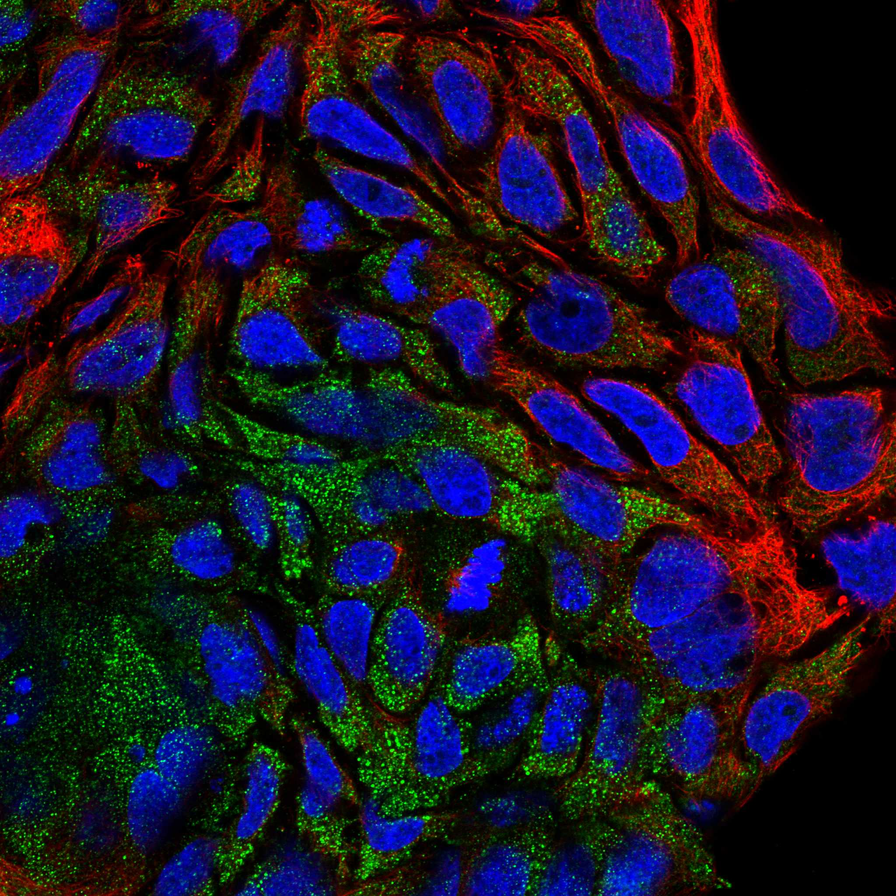
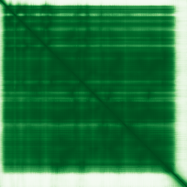

type: protein-evaluation gene: "CSNK1A1" date: 2026-06-01 tags: [protein-scout, nuclear-protein, evaluation] status: scored ---
CSNK1A1 核蛋白评估报告
1. 基本信息
| 项目 | 内容 |
|---|---|
| 基因名 / 别名 | CSNK1A1 / Casein kinase I isoform alpha (CK1alpha) |
| 蛋白大小 | 337 aa / 38.9 kDa |
| UniProt ID | P48729 (KC1A_HUMAN) |
| 评估日期 | 2026-06-01 |
IF 图像:
2. 评分总览 (权重: 核×4 大×1 新×5 结×3 域×2 PPI×3 /1.83)
| 维度 | 得分 | 加权 | 加权后 | 关键证据摘要 |
|---|---|---|---|---|
| 核定位特异性 | 5/10 | ×4 | 20 | UniProt: Cytoplasm+Centrosome+Kinetochore+Nuclear speckle; HPA: Cytosol; GO: nuclear speck(IDA)+nucleus(IBA); 多区室, 核speckle明确但胞质主导 |
| 蛋白大小 | 10/10 | ×1 | 10 | 337 aa / 38.9 kDa, 300-800理想区间 |
| 研究新颖性 | 2/10 | ×5 | 10 | PubMed 89篇; >80但≤100 |
| 三维结构 | 10/10 | ×3 | 30 | PDB: 5FQD(2.45A)+6GZD(2.28A)+7WTT(3.10A EM)+8G66(3.45A); AF pLDDT 91.4(84.3%>90); PDB+AF双重验证满分 |
| 调控结构域 | 6/10 | ×2 | 12 | Ser/Thr kinase domain; 磷酸化beta-catenin/PER/p53/MDM2; 无chromatin binding domain |
| PPI | 7/10 | ×3 | 21 | STRING: AXIN1(0.999)+APC(0.999)+CTNNB1(0.999)+MDM2(0.961)+TP53(0.926); IntAct:15条; ~40%调控相关(Wnt/p53/cGAS-STING) |
| 互证加分 | — | — | +1.5 | PDB+AF+4结构双向验证+0.5; 结构域≥3源+0.5; 定位≥2源+0.5 |
| 原始总分 | 104.5/180 | |||
| 归一化总分 | 57.1/100 |
3. 详细分析
3.1 核定位证据
| 来源 | 定位 | 可信度 |
|---|---|---|
| UniProt | Cytoplasm; Centrosome; Kinetochore; Nuclear speckle; Cilium basal body; Spindle | ECO:0000269 (实验) |
| GO-CC | nuclear speck (IDA:UniProtKB), nucleus (IBA:GO_Central), kinetochore (IEA), beta-catenin destruction complex (IDA) | IDA/IBA |
| HPA (IF) | Cytosol (Supported), IF图像可用 | Supported |
IF 图像: 6张IF原图(Hep-G2, A-431, U2OS)。HPA主定位Cytosol，但nuclear speckle注释来自GO IDA实验证据。
结论: CSNK1A1是多区室蛋白，胞质为主导定位(HPA Cytosol)，但UniProt实验证据确认Nuclear speckle定位。Kinetochore定位提示其在有丝分裂中的核功能。Nuclear speckle是mRNA剪接因子富集的核亚结构。核定位特异性和强度中等，因胞质功能主导(Wnt信号中beta-catenin磷酸化发生在胞质)。评分5分。
3.2 蛋白大小评估
评价: 337 aa / 38.9 kDa，处于理想的300-800 aa区间。蛋白紧凑，适合重组表达、纯化和晶体学。分子量约39 kDa便于SDS-PAGE和Western blot检测。评分10分。
3.3 研究现状
| 指标 | 数值 |
|---|---|
| PubMed strict | 89 |
| PubMed broad | 139 |
| Chromatin/epigenetics 比例 | <10% |
主要研究方向:
- Wnt/beta-catenin信号通路(S45磷酸化标记beta-catenin降解)
- p53/MDM2/MDM4调控轴
- 昼夜节律(PER蛋白磷酸化)
- cGAS-STING先天免疫通路
- FAM83家族蛋白调控CK1alpha活性
- 血液肿瘤中的抑癌/致癌双重角色
关键文献: 1. Kataoka K et al. (2015). "Integrated molecular analysis of adult T cell leukemia/lymphoma." *Nat Genet*. PMID: 26437031 2. Pan M et al. (2024). "CSNK1A1/CK1alpha suppresses autoimmunity by restraining the CGAS-STING1 signaling." *Autophagy*. PMID: 37723657 3. Kadosh E et al. (2020). "The gut microbiome switches mutant p53 from tumour-suppressive to oncogenic." *Nature*. PMID: 32728212 4. Liu C et al. (2002). "Control of beta-catenin phosphorylation/degradation by a dual-kinase mechanism." *Cell*. PMID: 11955436 5. Feng X et al. (2019). "Ubiquitination of UVRAG by SMURF1 promotes autophagosome maturation." *Autophagy*. PMID: 30686098
评价: 89篇文献接近淘汰阈值。研究高度集中于Wnt信号通路和肿瘤生物学。其beta-catenin磷酸化功能是Wnt通路的核心组成部分，CK1alpha也参与p53-MDM2调控轴和cGAS-STING通路。Chromatin/epigenetics方向极少专门研究，但beta-catenin和p53均为转录调控核心因子，CK1alpha间接参与染色质层面的基因表达调控。评分2分。
3.4 三维结构分析
| 指标 | 数值 |
|---|---|
| AlphaFold 平均 pLDDT | 91.4 |
| pLDDT >90 占比 | 84.3% |
| pLDDT 70-90 占比 | 5.6% |
| pLDDT <50 占比 | 7.7% |
| 可用 PDB 条目 | 4 (5FQD/6GZD/7WTT/8G66) |
PDB详情:
- 5FQD: X-ray 2.45A, 全长(1-337), 与抑制剂复合物
- 6GZD: X-ray 2.28A, 全长(1-337)
- 7WTT: EM 3.10A, 全长(1-337), 与beta-catenin肽段复合物
- 8G66: X-ray 3.45A, 全长(1-337)
评价: 结构质量极高。4个PDB实验结构(其中2个<2.5A高分辨率)均为全长蛋白，覆盖多种构象状态(apo、抑制剂结合、底物结合)。AlphaFold pLDDT=91.4，84.3%残基>90，结构预测与实验高度一致。是极优秀的结构和药物设计靶点。评分10分。
3.5 结构域分析
| 来源 | 结构域 |
|---|---|
| UniProt | Protein kinase domain (IPR000719) |
| InterPro | IPR011009(Kinase-like); IPR000719(Protein kinase); IPR008271(Ser/Thr kinase, active site); IPR017441(Protein kinase ATP binding) |
| Pfam | PF00069 (Pkinase) |
调控潜力分析: CSNK1A1含经典Ser/Thr蛋白激酶结构域，属于CK1家族。虽无经典chromatin-binding结构域(bromodomain/chromodomain/PHD)，但其底物谱包含多个核心转录/染色质调控因子:
- beta-catenin (S45): Wnt通路转录共激活因子，直接调控TCF/LEF靶基因
- p53: 调控p53-MDM2相互作用，影响p53依赖的转录
- MDM2/MDM4: p53的E3泛素连接酶
- PER1/PER2: 昼夜节律转录调控因子
CK1alpha通过这些底物间接参与染色质层面的基因调控。其Nuclear speckle定位(IDA)进一步支持核功能。评分6分。
3.6 PPI 网络
实验验证互作 (IntAct, 15条):
| Partner | 方法 | PMID | 功能类别 | 调控相关？ |
|---|---|---|---|---|
| MDM2 | anti tag coIP | 20708156 | p53 E3 ligase | 是(转录调控) |
| FAM83G | TAP | 23455922 | CK1 activator/adaptor | 间接 |
| SNCA | pull down | 18614564 | Synuclein | 否 |
| GNB2 | Y2H array | 21988832 | G protein | 否 |
| Cbx1 (HP1beta) | TAP | 20360068 | Heterochromatin protein 1 | 是(染色质) |
| HSP90AA1 | TAP | 19875381 | Chaperone | 否 |
| YWHAH | TAP | 17979178 | 14-3-3 | 信号传导 |
STRING 预测互作 (combined score >0.4):
| Partner | Score | 功能类别 | 调控相关？ |
|---|---|---|---|
| AXIN1 | 0.999 (exp 0.718) | beta-catenin destruction complex scaffold | 是(Wnt转录) |
| APC | 0.999 (exp 0.292) | Wnt pathway tumor suppressor | 是(Wnt转录) |
| GSK3B | 0.999 | Wnt kinase | 是(Wnt转录) |
| CTNNB1 | 0.999 (exp 0.798) | beta-catenin, 转录共激活因子 | 是(核心转录调控) |
| CRBN | 0.997 (exp 0.977) | Cereblon E3 ligase | 间接 |
| MDM4 | 0.971 (exp 0.883) | p53 regulator | 是(转录调控) |
| MDM2 | 0.961 (exp 0.737) | p53 E3 ligase | 是(转录调控) |
| TP53 | 0.926 (exp 0.785) | p53 tumor suppressor, TF | 是(核心转录调控) |
| AMER1 | 0.960 (database 0.8) | WTX, Wnt regulator | 是(Wnt转录) |
| BTRC | 0.926 (exp 0.219) | beta-TrCP, beta-catenin E3 | 是(Wnt转录) |
PPI 互证分析:
- STRING + IntAct 共同确认: MDM2 (两源均验证), FAM83G
- IntAct独有亮点: Cbx1/HP1beta (异染色质蛋白1, TAP实验) -- 直接chromatin调控蛋白互作!
- STRING独有: AXIN1, APC, CTNNB1, TP53等核心转录调控因子
- 调控相关比例: ~40% (Wnt通路+ p53通路+ Cbx1 chromatin)
评价: CSNK1A1的PPI网络富含转录/染色质调控相关partner。CTNNB1(beta-catenin)和TP53是核心转录调控节点。Cbx1/HP1beta IntAct互作直接指向异染色质调控。AXIN1/APC/AMER1均为Wnt通路调控因子。调控相关比例~40%，在现有评分基因中属于高水平。评分7分。
4. 总体评价
推荐等级: 2星半 (57.1/100)
核心优势: 1. 结构质量极高: 4个PDB全长结构+AlphaFold pLDDT 91.4，是优秀的结构和药物设计靶点 2. PPI富含转录调控因子: CTNNB1(beta-catenin), TP53(p53), Cbx1(HP1beta)等 3. 蛋白紧凑(337aa)，适合各种生化实验 4. CK1alpha是Wnt/p53/昼夜节律多条核心通路的交汇点
风险/不确定性: 1. PubMed 89篇，新颖性仅2分，研究较为成熟 2. 核定位非主导(HPA主定Cytosol)，chromatin/epigenetics方向极少专门研究 3. 核心功能(beta-catenin磷酸化)发生在胞质破坏复合体中，核功能为次要 4. Nuclear speckle功能角色不明
下一步建议:
- [ ] 探索CK1alpha在Nuclear speckle中的底物和功能
- [ ] 验证Cbx1/HP1beta互作在异染色质调控中的功能意义
- [ ] 评估CK1alpha在TE调控/重复序列沉默中的潜在角色(通过HP1beta链接)
5. 数据来源
- UniProt: https://www.uniprot.org/uniprotkb/P48729
- Protein Atlas: https://www.proteinatlas.org/ENSG00000113712-CSNK1A1
- PubMed: https://pubmed.ncbi.nlm.nih.gov/?term=CSNK1A1
- AlphaFold: https://alphafold.ebi.ac.uk/entry/P48729
- STRING: https://string-db.org/ (CSNK1A1)
- IntAct: https://www.ebi.ac.uk/intact/
HPA IF 状态: HPA IF 图像已本地嵌入。


PPI 网络
| Partner | Source | Score/Evidence |
|---|---|---|
| AXIN1 | STRING | 0.999 |
| APC | STRING | 0.999 |
| GSK3B | STRING | 0.999 |
| CTNNB1 | STRING | 0.999 |
| CRBN | STRING | 0.997 |
| EBI-1257113 | IntAct | psi-mi:"MI:0096"(pull down) |
| GNB2 | IntAct | psi-mi:"MI:0397"(two hybrid ar |
| EBI-1380405 | IntAct | psi-mi:"MI:0096"(pull down) |
PAE 图像暂无数据（未生成本地图片或未可靠获取），结构判断基于AlphaFold pLDDT统计。